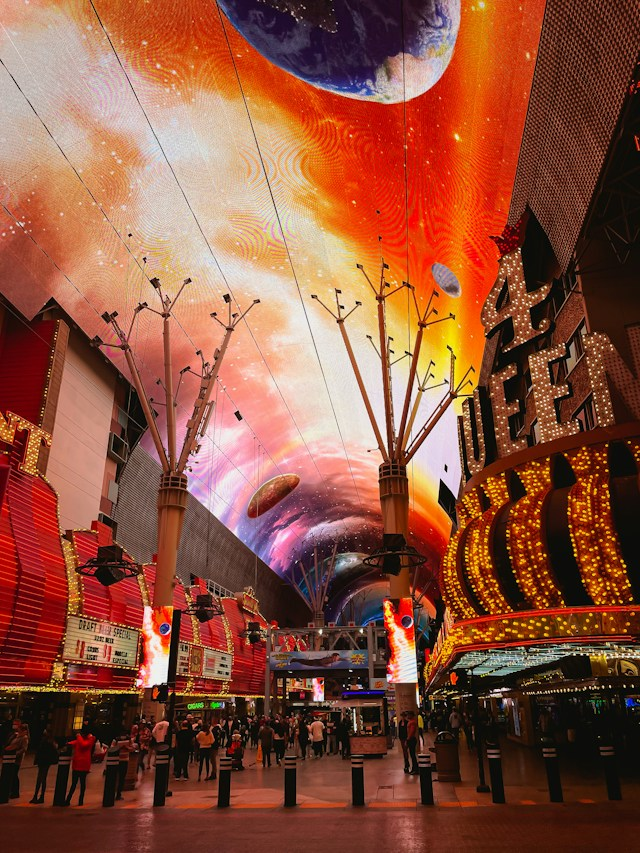

Things to Do & Entertainment
Explore Las Vegas with sightseeing, city views, shows, and nightlife.
Sightseeing & Attractions
The Las Vegas Strip
Walk along the Strip and explore its hotels, shops, and attractions. Choose a few stops that interest you and leave time to look around.
Fremont Street
Head downtown to Fremont Street for lights, music, and nightlife. Spend some time walking around and taking in the atmosphere.

Bellagio Fountains
Stop outside Bellagio to watch the fountains move along with music and lights. This free attraction is a fun stop to include while exploring the Strip.

High Roller at The LINQ
Take a ride on the High Roller for views of Las Vegas from above. The observation wheel takes about 30 minutes to complete one rotation, giving you time to enjoy the scenery.
Gondola Rides at The Venetian
Ride along the canal at The Venetian with a singing gondolier. The resort offers indoor rides through the Grand Canal Shoppes and outdoor rides when the season and weather allow.
Omega Mart at AREA15
Explore an interactive art experience that looks like a grocery store but has hidden rooms, colorful displays, and unexpected surprises throughout.
The Neon Museum
Visit the Neon Museum to see old Las Vegas signs and learn more about the city's history. It is also a nice place to take pictures and explore something different from the Strip.
Shows & Entertainment
Find ideas for an evening out, whether you want to see a show or experience something different.
- "O" at Bellagio
- Michael Jackson ONE at Mandalay Bay
- Absinthe at Caesars Palace
- Mat Franco: Magic Reinvented Nightly at The LINQ
Sphere
Experience entertainment at Sphere, a venue known for its large screens, impressive visuals, and immersive shows.
Clubs & Nightlife
Keep the night going with a visit to a club or an ice bar experience.
Shopping & Souvenirs
Coca-Cola Store
Stop at the Coca-Cola Store for branded clothing, gifts, and souvenirs. Take a look around while exploring the Strip.
Hershey's Chocolate World
Visit Hershey's Chocolate World at New York-New York for chocolate, sweet treats, and souvenirs. Pick something for yourself or bring a gift home for someone else.
The Forum Shops at Caesars Palace
Explore a shopping center with designer stores, restaurants, and Roman-inspired architecture. This is a nice option for visitors who want to spend a little extra while shopping.
The Shops at Crystals
Explore a luxury shopping center on the Strip with designer stores like Gucci, Louis Vuitton, and Prada. This is another option for visitors who enjoy high-end shopping.
Las Vegas North Premium Outlets
Shop at an outdoor outlet with a variety of popular brands, clothing, shoes, and accessories. This is a good place for visitors who want to find deals while shopping.
Broadacres Marketplace
Visit an outdoor swap meet in North Las Vegas with different vendors selling clothes, shoes, gifts, and other items. Visitors can also enjoy food and live music while shopping.